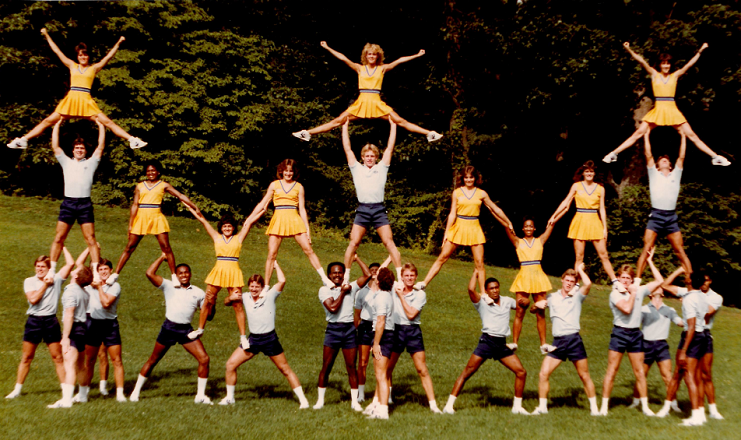

Cheer Facts and Statstics
- There are at least 4 million cheerleaders in 31 countries.
- 97% of all cheerleaders are female.
- 80% of schools in the United States have cheerleading squads.
- 12% of cheerleaders are aged 5 to 13 years, and 12% are dancers.
- 83% of all cheerleaders have a B average or better.
- Lauren Chang, a college student on an all star squad, died of a collapsed lung when she was accidentally kicked in the chest during a cheerleading competition.
- Cheerleading has resulted in one death per year, on average, from 1991 to 2015. The annual cheerleading injury rate almost doubled from 2001 to 2012.
- Cheerleading is a leading cause of head injury in girls and women who play sports
- Concussion is a very common head injury that is receiving far more attention due to the spotlight on NFL players. The cumulative effects of concussion have also been linked to depression and cognitive defects later in life and is not something to be taken lightly.
- Cheerleaders are at higher risk than many athletes for neck fractures, particularly when participating in flips and tossing one another into the air on a hard sports court.
- Franklin D. Roosevelt (Harvard College), Dwight D. Eisenhower (West Point), Ronald Reagan (Eureka College) and George W. Bush (Phillips Academy) were former cheerleaders at their schools who worked their way to the White House.
- On December 23, 2018, the largest cheerleading cheer was done by over 2,102 people in Hangzhou, Zhejiang, China
- Holding another current entry in the Guinness Book of World Records, the largest cheer pyramid had 60 girls creating one giant pyramid. It was recorded in August 2017 in New Zealand.
- There are more than 3.82 million cheerleaders in 2017 in the U.S. alone.
- 83% keep a B average and 70 percent play a second sport.
- In their beginnings, pom-poms were used as a decoration for cheerleaders and made of paper. However, usable pom-poms were designed and manufactured with a hidden handle by Lawrence Herkimer (Herkie) in 1953.
- The NCA was founded in 1948 by Herkie, who would go on to make pom-poms. This cheerleading leader also created the first uniform company.
- The University of Minnesota allowed women to join their cheerleading squad in 1923. They were practically the only one that allowed women until the 1940s.
- Cheerleading is considered the most dangerous sport for girls with it accounting for about 66% of all injuries.
- While cheerleading camps can be traced back to the 1940s and stunts to the 1970s, competitive cheer teams didn't take off until the 1980s.
- The first recorded actual routine was at the Universal Cheerleaders Association (UCA) College Spirit Camp.
Photos:
